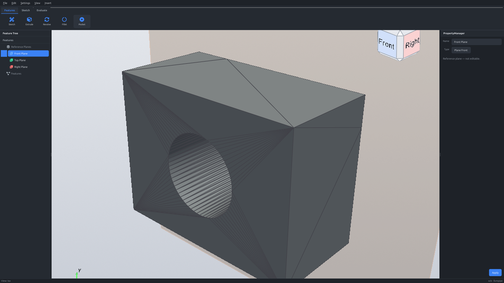
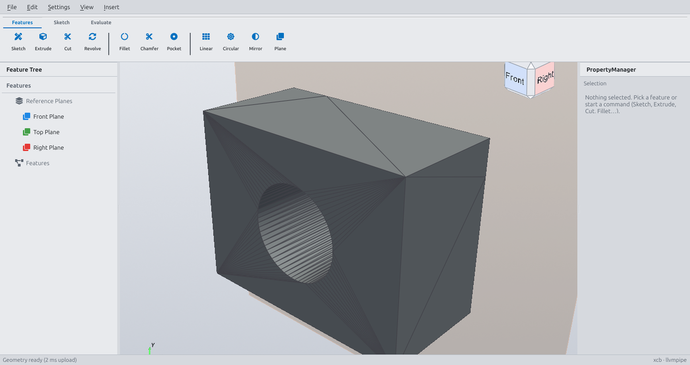
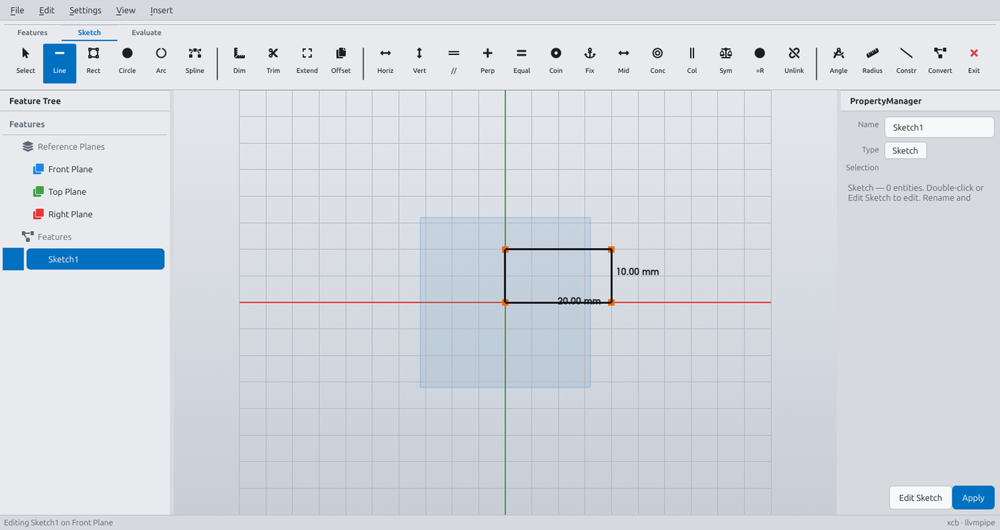
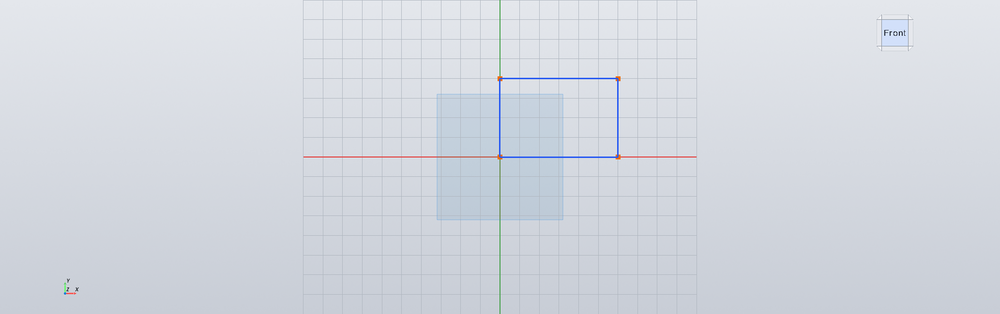
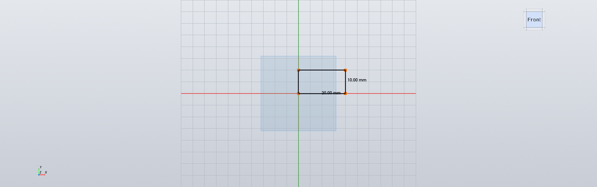
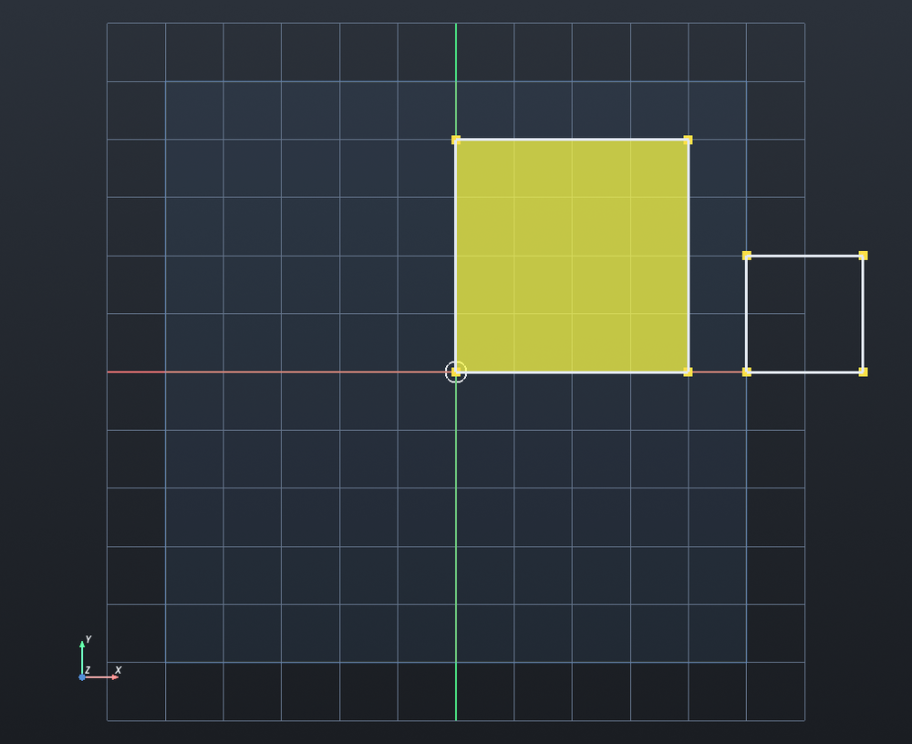
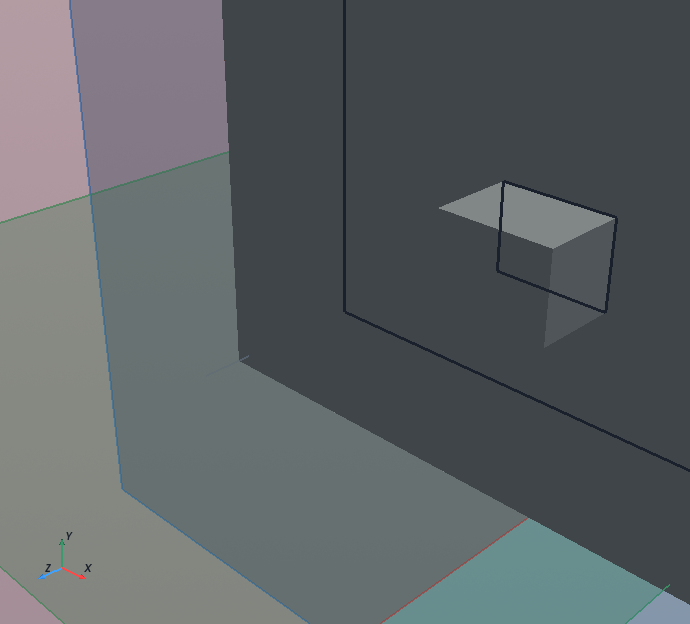
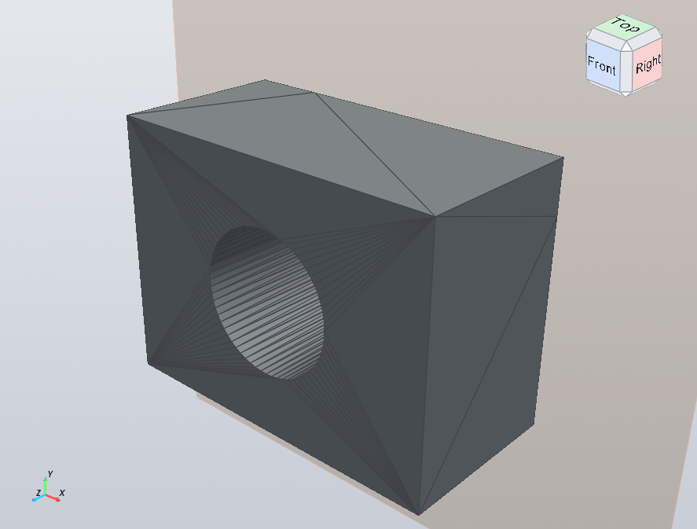

A short path from clone → first solid → save. If you only want install commands, see the root README.
Prefer a styled page? Open the rendered guide: getting-started.html (works offline with images).
| Python | 3.12 recommended (VTK wheels are most reliable) |
| OS | Linux, WSL2, or Windows |
| GPU | Optional — software GL works (slower) |
git clone https://github.com/citax/Grok-CAD.git
cd Grok-CADWSL / Linux — put the venv on the Linux filesystem, not under /mnt/c. VTK loads many .so files; a Windows mount is slow and can break imports.
# With uv (recommended)
uv venv "$HOME/.venvs/grok-cad" --python 3.12
uv pip install --python "$HOME/.venvs/grok-cad/bin/python" -r requirements.txt
ln -sfn "$HOME/.venvs/grok-cad" .venvPlain venv also works:
python3.12 -m venv .venv
source .venv/bin/activate # Windows: .venv\Scripts\activate
pip install -r requirements.txtsource .venv/bin/activate
pytest -q| Platform | Command |
|---|---|
| Linux / WSL | ./run_cad.sh |
| Windows (cmd) | run_cad.cmd |
| Windows (PowerShell) | .\run_cad.ps1 |
run_cad.sh forces software GL and xcb so WSLg + VTK stay stable.
You should see the dark (or light) shell: Feature Tree left, viewport center, PropertyManager right, Command Manager on top.

| Region | What it does |
|---|---|
| Feature Tree | Reference planes + your sketches/features history |
| Command Manager | Tabs: Features · Sketch · Evaluate |
| Viewport | Orbit (LMB drag), pan/zoom (VTK defaults), View Cube |
| PropertyManager | Params for the active selection or command (~240px) |
| Menus | File / Edit / Settings / View / Insert |


SolidWorks-like flow: select something → start a command → set params in the PropertyManager → Apply / confirm. Failed features leave the part unchanged.
Goal: a simple rectangular block (and optionally a hole).

Blue geometry usually means under-defined (still free to drag). That is normal until you add dimensions/constraints.

Closed profiles can show a fill when ready for a solid feature:

E). You now have a solid body in the tree (e.g. Extrude1).

Ctrl+Shift+S) helps inspect interiors.

Constraints and driving dimensions are promises: they keep working after drag, save, and reopen. If a new constraint conflicts, the app refuses it and leaves the sketch unchanged.
| Tool | Meaning |
|---|---|
| Horizontal / Vertical | Line stays axis-aligned |
| Parallel / Perpendicular | Two lines |
| Equal | Equal lengths (or equal radius for arcs/circles) |
| Coincident | Points share a location |
| Fix | Lock a point in place |
| Tangent | Smooth line–arc join |
| Midpoint · Concentric · Collinear · Symmetric | Advanced layout |
| Kind | Use on |
|---|---|
| Linear | Line length, rect sides |
| Diameter / Radius | Circles, arcs |
| Angle | Two lines |
Partial under-constraint is fine — only over-constraint is rejected.
From the Features Command Manager (or Insert menu):
| Tool | Shortcut | Role |
|---|---|---|
| Sketch | S | Start / edit sketch on plane or face |
| Extrude | E | Boss pad from closed profile |
| Cut-Extrude | C | Remove material |
| Revolve | R | Revolve profile about an axis |
| Fillet | F | Edge fillet on a solid (not sketch corners) |
P | Circular pocket / hole style cut | |
| Chamfer | — | Edge chamfer |
| Linear / Circular / Mirror | — | Patterns & symmetry |
| Plane | — | Offset reference plane |
Fillet rounds edges on the solid after you have a body. Select edges → set radius → Apply.
| Action | Shortcut | Format |
|---|---|---|
| New | Ctrl+N | Empty project |
| Open | Ctrl+O | .gcad |
| Save / Save As | Ctrl+S | .gcad project |
| Export STL | Ctrl+E | Mesh for print / other tools |
| Undo / Redo | Ctrl+Z / Ctrl+Y | History stack |
.gcad stores the feature tree and sketches so you can reopen and edit later — not just a dead mesh.
| Key | Action |
|---|---|
Ctrl+N | New |
Ctrl+O | Open |
Ctrl+S | Save |
Ctrl+E | Export STL |
Ctrl+Z | Undo |
Ctrl+Y / Ctrl+Shift+Z | Redo |
Ctrl+X / C / V | Cut / Copy / Paste (sketch) |
Delete | Delete selection |
Ctrl+L | Set length |
| Key | Action |
|---|---|
S | Sketch |
E | Extrude |
C | Cut-Extrude |
R | Revolve |
F | Fillet |
P |
| Key | Action |
|---|---|
Ctrl+F | Fit all |
Ctrl+Shift+S | Section view |
Space | (view / triad related shortcut) |
| LMB drag | Orbit |
| View Cube | Jump to named views |
Failed to load vtkRenderingVolumeOpenGL2: No module named vtkmodules...Fix: recreate the venv under $HOME (not /mnt/c), reinstall requirements.txt, re-link .venv.
Often software-GL or Qt platform mismatch. Prefer:
./run_cad.sh # sets LIBGL_ALWAYS_SOFTWARE=1 and QT_QPA_PLATFORM=xcbUse unattended mode so dirty docs discard without dialogs:
GROK_CAD_UNATTENDED=1 QT_QPA_PLATFORM=offscreen python -m app.mainRead the status / PropertyManager message. The part should be unchanged — fix selection or params and try again.
docs/media/ AGENTS.md CONTRIBUTING.md Happy modeling.